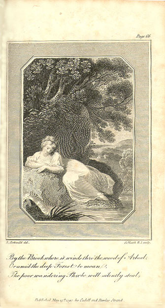

contents | previous | next
THE trees have now hid at the edge of the hurst The spot where the ruins decay Of the cottage, where Will of the Woodland was nursed And lived so beloved, will the moment accurst When he went from the woodland away. Among all the lads of the plough or the fold, Best esteem'd by the sober and good, Was Will of the Woodlands; and often the old Would tell of his frolics, for active and bold Was William the Boy of the wood. 55 Yet gentle was he, as the breath of the May,And when sick and declining was laid The woodman his father, young William away Would go to the forest to labour all day, And perform his hard task in his stead. And when his poor father the forester died, And his mother was sad, and alone, He toil'd from the dawn, and at evening he hied In storm or in snow, or whate'er might betide, To supply all her wants from the town. 56 One neighbour they had on the heath to the west,And no other the cottage was near, But she would send Phoebe, the child she loved best, To stay with the widow, thus sad and distrest, Her hours of dejection to cheer. As the buds of wild roses, the cheeks of the maid Were just tinted with youth's lovely hue, Her form like the aspen, wild graces display'd, And the eyes, over which her luxuriant locks stray'd, As the skies of the Summer were blue! 57 Still labouring to live, yet reflecting the while,Young William consider'd his lot; 'Twas hard, yet 'twas honest; and one tender smile From Phoebe at night overpaid ev'ry toil, And then all his fatigues were forgot. By the brook where it glides thro' the copse of Arbeal, When to eat his cold fare he reclined, Then soft from her home his sweet Phoebe would steal And bring him wood-strawberries to finish his meal, And would sit by his side while he dined. 58 And tho' when employ'd in the deep forest glade,His days have seem'd slowly to move, Yet Phoebe going home, thro' the wood-walk has stray'd To bid him good night! — and whatever she said Was more sweet than the voice of the dove. Fair Hope, that the lover so fondly believes, Then repeated each soul-soothing speech, And touch'd with illusion, that often deceives The future with light; as the sun thro' the leaves Illumines the boughs of the beech. 59 But once more the tempest of chill Winter blow,To depress and disfigure the earth; And now ere the dawn, the young Woodman must go To his work in the forest, half buried in snow, And at night bring home wood for the hearth. The bridge on the heath by the flood was wash'd down, And fast fell the sleet and the rain, The stream to a wild rapid river was grown, And long might the widow sit sighing alone Ere sweet Phoebe could see her again. 60 At the town was a market — and now for suppliesSuch as needed her humble abode, Young William went forth; and his mother with sighs Watch'd long at the window, with tears in her eyes, Till he turn'd thro' the fields, to the road. Then darkness came on; and she heard with affright The wind every moment more high; She look'd from the door; not a star lent its light, But the tempest redoubled the gloom of the night, And the rain pour'd in sheets from the sky. 61 The clock in her cottage now mournfully toldThe hours that went heavily on; 'Twas midnight; her spirits sunk hopeless and cold, And it seem'd as each blast of wind fearfully told That long, long would her William be gone. Then heart-sick and cold to her sad bed she crept, Yet first made up the fire in the room To guide his dark steps; but she listen'd and wept, Or if for a moment forgetful she slept, Soon she started! — and thought he was come. 62 'Twas morn; and the wind with an hoarse sullen moanNow seem'd dying away in the wood, When the poor wretched mother still drooping, alone, Beheld on the threshold a figure unknown, In gorgeous apparel who stood. "Your son is a soldier," abruptly cried he, "And a place in our corps has obtain'd, "Nay be not cast down; you perhaps may soon see "Your William a captain! he now sends by me "The purse he already has gain'd. 63 So William entrapp'd 'twixt persuasion and force,Is embark'd for the isles of the West, But he seem'd to begin with ill omens his course, And felt recollection, regret, and remorse Continually weigh on his breast. With useless repentance he eagerly eyed The high coast as it faded from view, And saw the green hills, on whose northernmost side Was his own sylvan home: and he falter'd and cried "Adieu! ah! for ever adieu! 64 "Who now, my poor mother, thy life shall sustain,"Since thy son has thus left thee forlorn? "Ah! can'st thou forgive me? And not in the pain "Of this cruel desertion, of William complain, "And lament that he ever was born? "Sweet Phoebe! — if ever thy lover was dear, "Now forsake not the cottage of woe, "But comfort my mother; and quiet her fear, "And help her to dry up the vain fruitless tear "That too long for my absence will flow. 65 "Yet what if my Phoebe another should wed,"And lament her lost William no more?" The thought was too cruel; and anguish now sped The dart of disease —With the brave numerous dead He has fall'n on the plague-tainted shore. In the lone village church-yard, the chancel-wall near, High grass now waves over the spot, Where the mother of William, unable to bear His loss, who to her widow'd heart was so dear, Has both him and her sorrows forgot. 66 By the brook where it winds thro' the wood of Arbeal,Or amid the deep forest, to moan, The poor wandering Phoebe will silently steal; The pain of her bosom no reason can heal, And she loves to indulge it alone. Her senses are injured; her eyes dim with tears; She fits by the river and weaves Reed garlands, against her dear William appears, Then breathlessly listens, and fancies she hears His step in the help-wither'd leaves. [plate]
 67 Ah! such are the miseries to which ye give birth,Ye statesmen! ne'er dreading a scar; Who from pictured saloon, or the bright sculptured hearth Disperse desolation and death thro' the earth, When ye let loose the demons of war. |